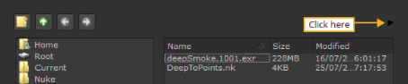

如果您喜欢使用菜单，也可以使用文件浏览器导入剪辑。您可以导入单个剪辑文件、范围或整个文件夹，具体取决于您打算使用的介质数量。
无论何时加载或保存文件，都会显示类似于下面所示的浏览器。目录导航按钮允许您创建或访问要从中读取或写入数据的目录。
导航控件允许您在目录结构中移动，为收藏夹目录添加书签，并创建新的目录文件夹。
注意: 如果导入文件夹，请使用 导入 选项 使用包含和排除参数过滤你的摄入，用空格分隔。对话的 包括模式 字段默认为 {支持的文件} ,它解析为所有已知支持的文件扩展名的列表。要将自己的自定义扩展添加到此，您可以使用 {Supportedfiles} *。ext (替换。 Ext 与您的自定义文件扩展名)。
仅限 Windows: 您可以显示/隐藏驱动器，通过右键单击 Windows 自动创建所需的驱动，选择 显示 默认值 ,并检查或取消检查驱动器。

• 单击 创建新目录 按钮 在文件层次结构中的当前位置创建一个新目录。
• 单击 向上一个目录 向更靠近根的一个目录移动。
• 单击 上一目录 返回一个目录。
•
单击
下一个目录
 前进一个目录。
前进一个目录。
• 单击 添加目录书签的按钮。
• 单击 编辑 按钮编辑书签的名称或路径名。
• 单击 - 按钮删除目录书签。
“路径名” 字段显示当前目录路径，您可以导航到新路径，还可以输入脚本和渲染图像的文件名。

• 要导航到目录，请在字段中键入路径名。
• 要输入脚本名称，请浏览到目录路径，并在显示的路径后输入文件名。
• 要将文件列表限制为特定的文件类型，请使用 过滤器 下拉菜单和 序列 复选框。
• 选择 *.Nk 只显示 Nuke 脚本文件。
• 选择 * 显示所有文件 (隐藏文件除外)，而不管它们与什么关联。
• 选择。 * * 显示所有文件，包括隐藏文件。
• 选择 */ 显示目录名称，但不显示其内容。
• 检查 序列 将图像序列显示为单个标题，如在 fgelement.#.cin 1-50 中，而不是 fgelement.0001.cin，fgelement.0002.cin，fgelement 中。0003.cin 等。
注意: 没有文件扩展名的文件序列 (例如，fgelement.0001 、 fgelement.0002 、 fgelement.0003 等) 在您第一次在文件浏览器中查看目录时不会显示为单个标题。但是，一旦导航到另一个目录并再次返回，它们将显示为单个标题。
注意:
默认情况下，应用程序可能无法显示自定义文件扩展名 (例如,
。Cext
) 作为单一标题。要解决这个问题，您可以使用 Python 将自定义文件扩展名注册为序列类型:
1。创建一个名为
Init.py
在你的插件路径目录中，如果一个已经不存在。有关插件路径目录的更多信息，请参见
加载 Gizmos 、 NDK 插件以及 Python 和 Tcl 脚本
.
2.打开
Init.py
文件在文本编辑器中，并添加以下格式的条目 (替换
Cext
与您的自定义文件扩展名):
Nuke.addSequenceFileExtension ("cext")
• 你也可以分割完整序列分解成为阅读节点使用 分裂 seq 复选框。
| 1。 | 单击文件浏览器右上角的黑色箭头。 |

文件浏览器扩展为包含一个小查看器。
| 2. | 在文件浏览器中选择要预览的文件以进行查看。 |
| 1。 | 浏览到文件所在的文件夹。 |
| 2. | Ctrl + 点击所有你想打开的文件来选择它们 (Mac 用户 Cmd + 点击)。 |
| 3. | 通过单击可以打开多个目录中的文件 下一个 并浏览到下一个文件位置。 |
| 4. | 单击 打开 . |
所有选定的文件都打开。
|
|